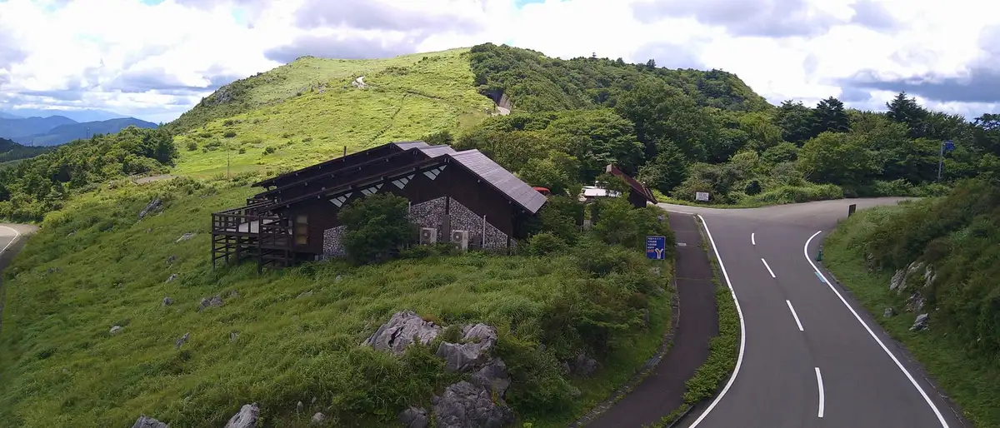
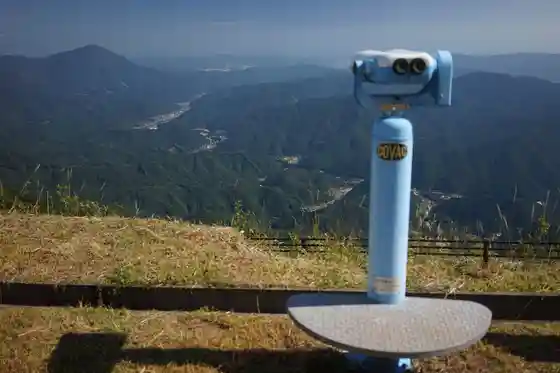
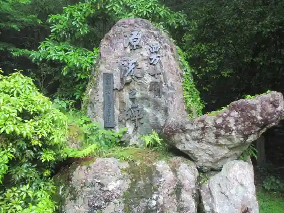
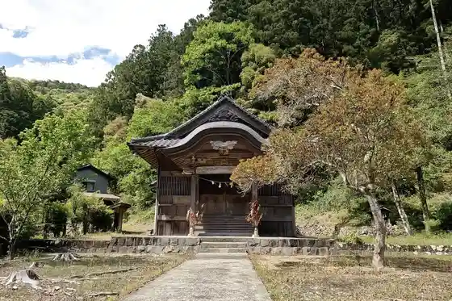
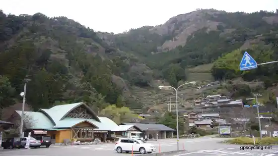

Tsuno
Tsuno · Kochi
Tsuno
Highlighted on the Kochi map.

Stay
Hoshi Furu Virejji TENGU
Dining
Jiyu Ken Hayama Mise
Sanzoku Chaya
Imahashi
Yu Ban Ya
Kichi Village Kotaro Tei
Fusha no Eki
Buta Taro Higashi Tsuno Mise
Iroha Shokudo
Sights
Shikoku Karusuto
Kaze no Sato Park

Shimantogawa Genryu Yuki Hi

Ari Miya Shrine

Roadside Station Fusegasaka

Funyu Yama
Mori no Subako